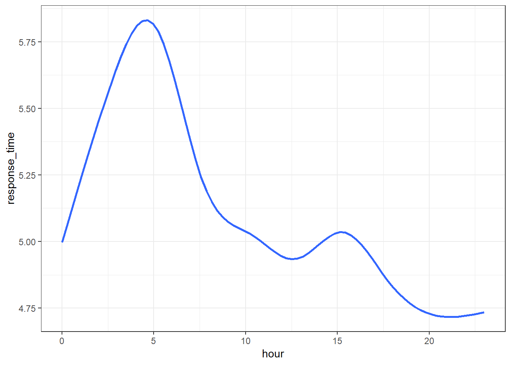
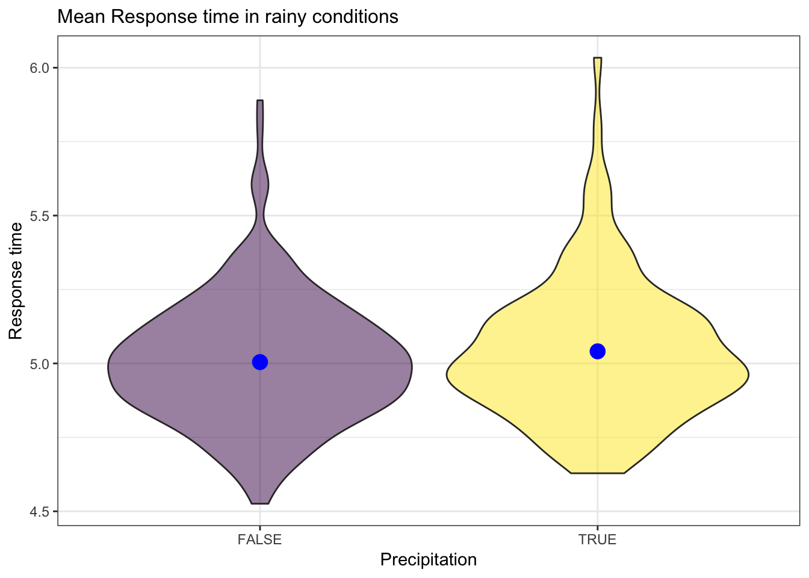
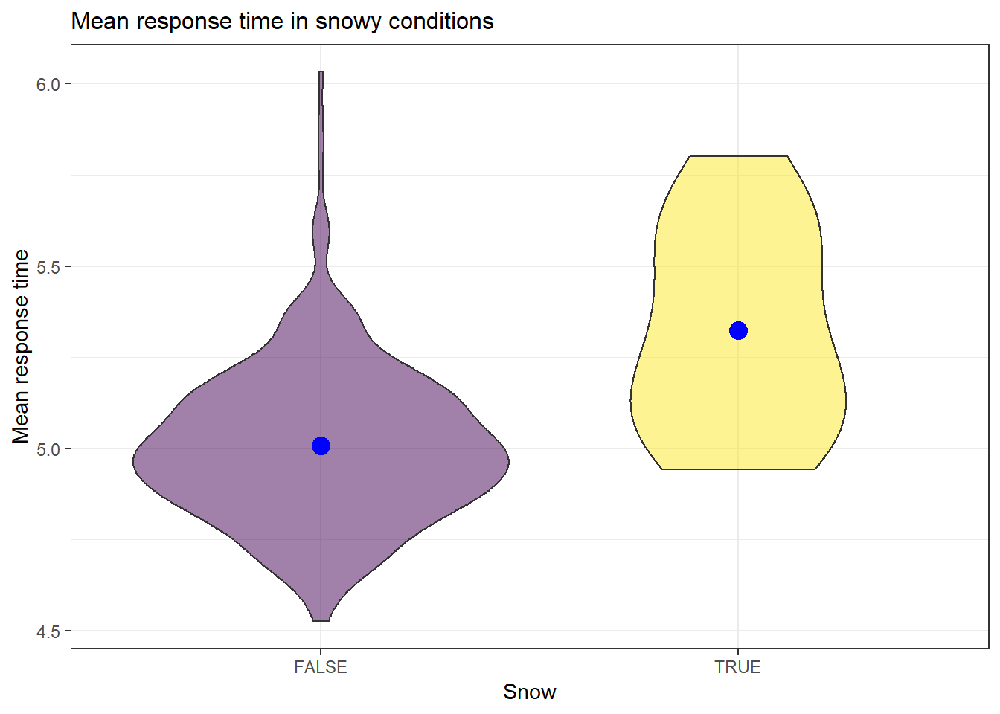

| title: “tentative report” |
| output: |
| html_document |
Motivation: Provide an overview of the project goals and motivation.
Related work: Anything that inspired you, such as a paper, a web site, or something we discussed in class.
Initial questions: What questions are you trying to answer? How did these questions evolve over the course of the project? What new questions did you consider in the course of your analysis?
Data: Source, scraping method, cleaning, etc.
Exploratory analysis: Visualizations, summaries, and exploratory statistical analyses. Justify the steps you took, and show any major changes to your ideas.
Additional analysis: If you undertake formal statistical analyses, describe these in detail
Discussion: What were your findings? Are they what you expect? What insights into the data can you make?
A major concern in emergency medical services (EMS) planning has been the need to minimize response time to better patient outcome, translated by some EMS operations into a goal of a response time of 8 minutes or less for advanced life support (ALS) units responding to life-threatening events. An exploratory analysis suggested there may be a small beneficial effect of response ≤7 minutes 59 seconds for those who survived to become an inpatient. More information on this can be found here and here
Due to its large population, New York City requires a powerful, quick, well-equipped and effective Emergency Medical Service System. Hence, we decided to analyse the EMS response time in New York City in the year 2017 with respect to weather and street blockage so as to improve it.
We tried to answer the factors assoicated with EMS response time. We assumed rainy or snowy conditions, season and hour of the day will affect the response time.
incident_dat_2017 <-
read_csv('data/Incidents_Responded_to_by_Fire_Companies.csv',
col_types = "cicccicciccccccccccciccccccc") %>%
janitor::clean_names() %>%
#recode date/time
mutate(incident_date_time = mdy_hms(incident_date_time),
arrival_date_time = mdy_hms(arrival_date_time)) %>%
#select year 2017
filter(year(incident_date_time) == 2017,
incident_type_desc == "300 - Rescue, EMS incident, other") %>%
select(im_incident_key, incident_date_time, arrival_date_time,
street_highway:borough_desc) %>%
na.omit() %>%
# Added response time(minute) variable
# mutate(response_time = arrival_date_time - incident_date_time) %>%
mutate(response_time = difftime(arrival_date_time, incident_date_time, units = 'mins'),
# Added hour variable
hour = hour(incident_date_time),
date = date(incident_date_time),
# Added incident_month and incident_day variables from incident_date_time
incident_date = as.Date(incident_date_time)) %>%
separate(incident_date,
into = c("incident_year", "incident_month", "incident_day"),
sep = "-") %>%
select(-incident_year) %>%
mutate(incident_month = as.numeric(incident_month),
incident_day = as.numeric(incident_day),
zip_code = as.numeric(zip_code))
save(incident_dat_2017, file = "data/incident_dat_2017.RData")url = "https://www.health.ny.gov/statistics/cancer/registry/appendix/neighborhoods.htm?fbclid=IwAR3N4VlKC1OehRZyEuDYPEAE7AFAEXXIRC11seIBKxA-0fd3g4hL0QvnV20"
xml = read_html(url)
zip_code_table = (xml %>% html_nodes(css = "table")) %>%
.[[1]] %>%
html_table() %>%
janitor::clean_names() %>%
select(neighborhood, zip_codes) %>%
separate(zip_codes, c("a", "b", "c", "d", "e", "f", "g", "h", "i"),
sep = ",") %>%
gather(key = to_remove, value = zip_code, a:i) %>%
select(-to_remove) %>%
na.omit() %>%
distinct() %>%
mutate(zip_code = as.numeric(zip_code))
save(zip_code_table, file = "data/zipcode.RData")library(rnoaa)
nyc_weather_2017 =
rnoaa::meteo_pull_monitors("USW00094728",
var = c("PRCP", "TMIN", "TMAX", "SNOW", "SNWD"),
date_min = "2017-01-01",
date_max = "2017-12-31"
) %>%
mutate(tmin = tmin/10, tmax = tmax/10, prcp = prcp/10) %>%
select(-id)
save(nyc_weather_2017, file = "data/nyc_weather_2017.RData")# incident_dat_2017
finaldat =
left_join(incident_dat_2017, zip_code_table, by = "zip_code") %>%
inner_join(., nyc_weather_2017, by = "date") %>%
mutate(response_time = as.numeric(response_time))
save(finaldat, file = "data/finaldat.RData")
load('data/finaldat.RData')Given that data of response time is right skewed, for visulization, we took a mean of response time as our outcome for exploratory analysis And then performed exploratory data analysis.
finaldat %>%
group_by(hour) %>%
ggplot(aes(x = hour, y = response_time)) +
geom_smooth(se = FALSE) 
finaldat %>%
mutate(prcp = prcp > 0) %>%
group_by(date, prcp) %>%
summarise(mean_resp_time = mean(response_time)) %>%
ggplot(aes(x = prcp, y = mean_resp_time)) +
geom_violin(aes(fill = factor(prcp)), alpha = .5) +
stat_summary(fun.y = mean, geom = "point", size = 4, color = "blue") +
labs(
title = "Mean Response time in rainy conditions",
x = "Precipitation",
y = "Response time"
) +
viridis::scale_fill_viridis(
name = "Precipitation",
discrete = TRUE) +
theme(plot.title = element_text(size = 12),
strip.background = element_rect(fill = "black"),
strip.text = element_text(color = "white", face = "bold"),
legend.position = "None") 
finaldat %>%
mutate(snow = snow > 0) %>%
group_by(date, snow) %>%
summarise(mean_resp_time = mean(response_time)) %>%
ggplot(aes(x = snow, y = mean_resp_time)) +
geom_violin(aes(fill = factor(snow)), alpha = .5) +
stat_summary(fun.y = mean, geom = "point", size = 4, color = "blue") +
labs(
title = "Mean response time in snowy conditions",
y = "Mean response time",
x = "Snow"
) +
viridis::scale_fill_viridis(
name = "Snow",
discrete = TRUE) +
theme(plot.title = element_text(size = 12),
strip.background = element_rect(fill = "black"),
strip.text = element_text(color = "white", face = "bold"),
legend.position = "None") 
We showed some trends by hour of the day and by snowy conditions. Based on this result, we fit linear regression.
fit_hour = lm(response_time ~ hour, data = finaldat)
fit_hour %>%
broom::tidy() %>%
knitr::kable(digits = 3)| term | estimate | std.error | statistic | p.value |
|---|---|---|---|---|
| (Intercept) | 5.470 | 0.017 | 317.714 | 0 |
| hour | -0.034 | 0.001 | -29.176 | 0 |
Ho: different hour of the day makes no difference in logs response time. p-value: very small. conclusion: There is a difference of log response time in different time/hour of the day.
fit_snow = lm(response_time~snow, data = finaldat)
fit_snow %>%
broom::tidy() %>%
knitr::kable(digits = 3)| term | estimate | std.error | statistic | p.value |
|---|---|---|---|---|
| (Intercept) | 5.009 | 0.007 | 678.552 | 0 |
| snow | 0.003 | 0.000 | 7.456 | 0 |
fit_prcp = lm(response_time~prcp, data = finaldat)
fit_prcp %>%
broom::tidy() %>%
knitr::kable(digits = 3)| term | estimate | std.error | statistic | p.value |
|---|---|---|---|---|
| (Intercept) | 5.005 | 0.008 | 647.000 | 0 |
| prcp | 0.003 | 0.001 | 4.014 | 0 |
H0: There is no correlation between snow and log_response_time p-value: very small estimate: positive conclusion: There is a positive correlation between snow and log response time. 3. MLR based on snow, prcp, tmax, tmin(factors of nature environment) in different hour of the day
fit_mlr = lm(response_time~snow + prcp + tmax + tmin, data = finaldat)
fit_mlr %>%
broom::tidy() %>%
knitr::kable(digits = 3)| term | estimate | std.error | statistic | p.value |
|---|---|---|---|---|
| (Intercept) | 5.077 | 0.022 | 226.683 | 0.000 |
| snow | 0.002 | 0.000 | 4.539 | 0.000 |
| prcp | 0.002 | 0.001 | 2.830 | 0.005 |
| tmax | 0.000 | 0.003 | 0.123 | 0.902 |
| tmin | -0.008 | 0.003 | -2.742 | 0.006 |
Even though we could get the statistically significant results with p-values less than 0.05, the estimates are too small so explanations from this was not meaningful.
Next, we categorized explanatory variables since we wanted to show the change of response time by the trend of precipitation, snow, season and time rather than by detailed amount of precipitation and snow or specific time. With these modified variables, we performed exploratory data analysis.
prcp_eda =
finaldat %>%
mutate(prcp_ctg = fct_relevel(prcp_ctg, c("no_prcp", "low", "high"))) %>% group_by(date, prcp_ctg) %>%
summarise(mean_resp_time = mean(response_time)) %>%
ggplot(aes(x = prcp_ctg, y = mean_resp_time)) +
geom_violin(aes(fill = prcp_ctg), alpha = .3) +
stat_summary(fun.y = mean, geom = "point", size = 2, color = "blue") +
labs(
title = "Rainy conditions",
y = "Mean response time(min)",
x = " "
) +
scale_x_discrete(labels = c("0(mm)", "0-25(mm)", "25(mm)+")) +
viridis::scale_fill_viridis(
name = "Precipitation",
discrete = TRUE) +
theme(plot.title = element_text(size = 12),
axis.title.y = element_text(size = 8),
axis.text.x = element_text(size = 9),
legend.position = "None")
snow_eda =
finaldat %>%
mutate(snow_ctg = fct_relevel(snow_ctg, c("no_snow", "low", "high"))) %>% group_by(date, snow_ctg) %>%
summarise(mean_resp_time = mean(response_time)) %>%
ggplot(aes(x = snow_ctg, y = mean_resp_time)) +
geom_violin(aes(fill = snow_ctg), alpha = .3) +
stat_summary(fun.y = mean, geom = "point", size = 2, color = "blue") +
labs(
title = "Snowy conditions",
y = "",
x = " "
) +
scale_x_discrete(labels = c("0(mm)", "0-50(mm)", "50(mm)+")) +
viridis::scale_fill_viridis(
name = "Snow",
discrete = TRUE) +
theme(plot.title = element_text(size = 12),
axis.title.y = element_text(size = 9),
axis.text.x = element_text(size = 8),
legend.position = "None")
prcp_snow = prcp_eda + snow_eda
ggsave("prcp_snow.png", plot = prcp_snow)season_eda =
finaldat %>%
mutate(season = fct_relevel(season, c("Spring", "Summer", "Fall", "Winter"))) %>%
group_by(date, season) %>%
summarise(mean_resp_time = mean(response_time)) %>%
ggplot(aes(x = season, y = mean_resp_time)) +
geom_violin(aes(fill = season), alpha = .3) +
stat_summary(fun.y = mean, geom = "point", size = 2, color = "blue") +
labs(
y = "Mean response time (min)",
x = " "
) +
viridis::scale_fill_viridis(
name = "season",
discrete = TRUE) +
theme(plot.title = element_text(size = 13),
axis.title.y = element_text(size = 10),
axis.text.x = element_text(size = 9),
legend.position = "None")
ggsave("season.png", plot = season_eda)hour_eda =
finaldat %>%
group_by(hour, season) %>%
ggplot(aes(x = hour, y = response_time, color = season)) +
geom_smooth(se = FALSE) +
scale_x_continuous(breaks = c(6, 12, 18),
labels = c("6am", "12pm", "18pm")) +
geom_vline(xintercept = c(6, 12, 18), color = "darkred") +
labs(
x = " ",
y = "Mean response time (min)"
) +
viridis::scale_color_viridis(
name = "Season",
discrete = TRUE)
theme(plot.title = element_text(size = 13),
axis.title.y = element_text(size = 10),
axis.text.x = element_text(size = 12),
legend.position = "None") ## List of 4
## $ axis.title.y :List of 11
## ..$ family : NULL
## ..$ face : NULL
## ..$ colour : NULL
## ..$ size : num 10
## ..$ hjust : NULL
## ..$ vjust : NULL
## ..$ angle : NULL
## ..$ lineheight : NULL
## ..$ margin : NULL
## ..$ debug : NULL
## ..$ inherit.blank: logi FALSE
## ..- attr(*, "class")= chr [1:2] "element_text" "element"
## $ axis.text.x :List of 11
## ..$ family : NULL
## ..$ face : NULL
## ..$ colour : NULL
## ..$ size : num 12
## ..$ hjust : NULL
## ..$ vjust : NULL
## ..$ angle : NULL
## ..$ lineheight : NULL
## ..$ margin : NULL
## ..$ debug : NULL
## ..$ inherit.blank: logi FALSE
## ..- attr(*, "class")= chr [1:2] "element_text" "element"
## $ legend.position: chr "None"
## $ plot.title :List of 11
## ..$ family : NULL
## ..$ face : NULL
## ..$ colour : NULL
## ..$ size : num 13
## ..$ hjust : NULL
## ..$ vjust : NULL
## ..$ angle : NULL
## ..$ lineheight : NULL
## ..$ margin : NULL
## ..$ debug : NULL
## ..$ inherit.blank: logi FALSE
## ..- attr(*, "class")= chr [1:2] "element_text" "element"
## - attr(*, "class")= chr [1:2] "theme" "gg"
## - attr(*, "complete")= logi FALSE
## - attr(*, "validate")= logi TRUEggsave("hour.png", plot = hour_eda)Accordingly, based on medical research, using a fact that 8min is a critical point, we categorized response time into binary outcome as less than 8min and over 8min.
fit_logistic =
glm(over_8min ~ season + hour_of_day + snow_ctg + prcp_ctg,
family = binomial(), data = finaldat)
summary(fit_logistic)##
## Call:
## glm(formula = over_8min ~ season + hour_of_day + snow_ctg + prcp_ctg,
## family = binomial(), data = finaldat)
##
## Deviance Residuals:
## Min 1Q Median 3Q Max
## -0.4561 -0.3762 -0.3658 -0.3271 2.4710
##
## Coefficients:
## Estimate Std. Error z value Pr(>|z|)
## (Intercept) -2.25604 0.09356 -24.113 < 2e-16 ***
## seasonSpring -0.05827 0.02890 -2.016 0.0438 *
## seasonSummer -0.06040 0.02850 -2.119 0.0341 *
## seasonWinter 0.01237 0.02928 0.423 0.6726
## hour_of_daydawn -0.06956 0.03240 -2.147 0.0318 *
## hour_of_daymorning 0.01421 0.02578 0.551 0.5817
## hour_of_daynight -0.30003 0.02671 -11.231 < 2e-16 ***
## snow_ctglow -0.17511 0.11026 -1.588 0.1123
## snow_ctgno_snow -0.38798 0.08432 -4.602 4.19e-06 ***
## prcp_ctglow 0.01879 0.05914 0.318 0.7507
## prcp_ctgno_prcp 0.04287 0.05798 0.739 0.4597
## ---
## Signif. codes: 0 '***' 0.001 '**' 0.01 '*' 0.05 '.' 0.1 ' ' 1
##
## (Dispersion parameter for binomial family taken to be 1)
##
## Null deviance: 78187 on 167589 degrees of freedom
## Residual deviance: 77979 on 167579 degrees of freedom
## AIC: 78001
##
## Number of Fisher Scoring iterations: 5fit_logistic %>%
broom::tidy() %>%
mutate(OR = exp(estimate),
lower_CI_OR = exp(estimate - 1.96*std.error),
upper_CI_OR = exp(estimate + 1.96*std.error)) %>%
select(term, OR, lower_CI_OR, upper_CI_OR) %>%
mutate(term = c("intercept", "Fall", "Summer", "Winter", "Afternoon", "Dawn", "Morning", "snow 50+", "snow 50-", "prcp 25+", "prcp 25-")) %>% knitr::kable(digits = 3, "html") %>% kableExtra::kable_styling(bootstrap_options = c("striped", "hover"))| term | OR | lower_CI_OR | upper_CI_OR |
|---|---|---|---|
| intercept | 0.105 | 0.087 | 0.126 |
| Fall | 0.943 | 0.891 | 0.998 |
| Summer | 0.941 | 0.890 | 0.995 |
| Winter | 1.012 | 0.956 | 1.072 |
| Afternoon | 0.933 | 0.875 | 0.994 |
| Dawn | 1.014 | 0.964 | 1.067 |
| Morning | 0.741 | 0.703 | 0.781 |
| snow 50+ | 0.839 | 0.676 | 1.042 |
| snow 50- | 0.678 | 0.575 | 0.800 |
| prcp 25+ | 1.019 | 0.907 | 1.144 |
| prcp 25- | 1.044 | 0.932 | 1.169 |
OR_total_df =
fit_logistic %>%
broom::tidy() %>%
mutate(OR = exp(estimate),
lower_CI_OR = exp(estimate - 1.96*std.error),
upper_CI_OR = exp(estimate + 1.96*std.error)) %>%
select(term, OR, lower_CI_OR, upper_CI_OR) %>%
as.tibble() %>%
mutate(ctg = c("intercept",
"Season", "Season", "Season",
"Hour of the day", "Hour of the day", "Hour of the day",
"Snow", "Snow",
"Rain", "Rain"),
sub_ctg_chr = c("intercept",
"Fall", "Summer", "Winter",
"Afternoon", "Dawn", "Morning",
"50(mm)+", "0-50(mm)",
"25(mm)+", "0-25(mm)"),
sub_ctg = c("1", "2", "1", "3", "8", "6", "7", "5", "4", "5", "4")) %>%
filter(ctg != "intercept")
adj = .2 # This is used in position_nudge to move the dots
OR =
ggplot(OR_total_df, aes(x = OR, y = ctg, color = sub_ctg,
label = sub_ctg_chr)) +
geom_vline(aes(xintercept = 1), size = 1, linetype = "dashed") +
geom_vline(aes(xintercept = 1.5), size = .6, linetype = "dashed") +
geom_errorbarh(data = filter(OR_total_df, sub_ctg == "1"),
aes(xmax = upper_CI_OR, xmin = lower_CI_OR),
size = .5, height = .1,
color = "gray50",
position = position_nudge(y = adj)) +
geom_text(data = filter(OR_total_df, sub_ctg == "1"),
aes(label = sub_ctg_chr), size = 6, colour = "seagreen4",
nudge_x = -.1, nudge_y = +.2, check_overlap = TRUE) +
geom_point(data = filter(OR_total_df, sub_ctg == "1"),
size = 6, color = "seagreen4",
position = position_nudge(y = adj)) +
geom_errorbarh(data = filter(OR_total_df, sub_ctg == "2"),
aes(xmax = upper_CI_OR, xmin = lower_CI_OR),
size = .5, height = .1,
color = "gray50") +
geom_text(data = filter(OR_total_df, sub_ctg == "2"),
aes(label = sub_ctg_chr), size = 6, colour = "indianred4",
nudge_x = -.1, nudge_y = 0, check_overlap = TRUE) +
geom_point(data = filter(OR_total_df, sub_ctg == "2"),
size = 6, color = "indianred4") +
geom_errorbarh(data = filter(OR_total_df, sub_ctg == "3"),
aes(xmax = upper_CI_OR, xmin = lower_CI_OR),
size = .5, height = .1,
color = "gray50", position = position_nudge(y = -adj)) +
geom_text(data = filter(OR_total_df, sub_ctg == "3"),
aes(label = sub_ctg_chr), size = 6, colour = "lavenderblush4",
nudge_x = -.1, nudge_y = -.2, check_overlap = TRUE) +
geom_point(data = filter(OR_total_df, sub_ctg == "3"),
size = 6, color = "lavenderblush4",
position = position_nudge(y = -adj)) +
geom_errorbarh(data = filter(OR_total_df, sub_ctg == "4"),
aes(xmax = upper_CI_OR, xmin = lower_CI_OR),
size = .5, height = .1,
color = "gray50", position = position_nudge(y = +.1)) +
geom_text(data = filter(OR_total_df, sub_ctg == "4"),
aes(label = sub_ctg_chr), size = 6, colour = "skyblue2",
nudge_x = -.15, nudge_y = +.1, check_overlap = TRUE) +
geom_point(data = filter(OR_total_df, sub_ctg == "4"),
size = 6, color = "skyblue2",
position = position_nudge(y = +.1)) +
geom_errorbarh(data = filter(OR_total_df, sub_ctg == "5"),
aes(xmax = upper_CI_OR, xmin = lower_CI_OR),
size = .5, height = .1,
color = "gray50", position = position_nudge(y = -.1)) +
geom_text(data = filter(OR_total_df, sub_ctg == "5"),
aes(label = sub_ctg_chr), size = 6, colour = "skyblue4",
nudge_x = -.16, nudge_y = -.1) +
geom_point(data = filter(OR_total_df, sub_ctg == "5"),
size = 6, color = "skyblue4",
position = position_nudge(y = -.1)) +
geom_errorbarh(data = filter(OR_total_df, sub_ctg == "6"),
aes(xmax = upper_CI_OR, xmin = lower_CI_OR),
size = .5, height = .1,
color = "gray50",
position = position_nudge(y = adj)) +
geom_text(data = filter(OR_total_df, sub_ctg == "6"),
aes(label = sub_ctg_chr), size = 6, colour = "seagreen4",
nudge_x = -.14, nudge_y = +.2, check_overlap = TRUE) +
geom_point(data = filter(OR_total_df, sub_ctg == "6"),
size = 6, color = "seagreen4",
position = position_nudge(y = adj)) +
geom_errorbarh(data = filter(OR_total_df, sub_ctg == "7"),
aes(xmax = upper_CI_OR, xmin = lower_CI_OR),
size = .5, height = .1,
color = "gray50") +
geom_text(data = filter(OR_total_df, sub_ctg == "7"),
aes(label = sub_ctg_chr), size = 6, colour = "indianred4",
nudge_x = -.13, nudge_y = 0, check_overlap = TRUE) +
geom_point(data = filter(OR_total_df, sub_ctg == "7"),
size = 6, color = "indianred4") +
geom_errorbarh(data = filter(OR_total_df, sub_ctg == "8"),
aes(xmax = upper_CI_OR, xmin = lower_CI_OR),
size = .5, height = .1,
color = "gray50", position = position_nudge(y = -adj)) +
geom_text(data = filter(OR_total_df, sub_ctg == "8"),
aes(label = sub_ctg_chr), size = 6, colour = "lavenderblush4",
nudge_x = -.13, nudge_y = -.2, check_overlap = TRUE) +
geom_point(data = filter(OR_total_df, sub_ctg == "8"),
size = 6, color = "lavenderblush4",
position = position_nudge(y = -adj)) +
scale_x_continuous(breaks = c(1, 1.5),
limits = c(.7, 1.8)) +
labs(x = "Odds Ratio",
y = " ") +
theme_bw() +
theme(panel.grid.minor = element_blank(),
axis.title.x = element_text(size = 16),
axis.text.x = element_text(size = 16),
axis.text.y = element_text(size = 20),
legend.position = "None")
ggsave("OR.png", plot = OR, width = 45, height = 25, units = "cm")Based on EDA, to get statistical analysis, we fit logistic regression and results are followings: - Snow: As expected from EDA, compared to no snow conditions, odds of over 8min response time is increased 24% by 0~50mm snow and 47% by over 50mm snow. - Season: Compared to Spring, Summer does not affect odds of over 8min response time but odds is increased in Fall by 6% and in Winter by 7%. - Rain: Statistically significant result was not obtained from rain variable and it matches the result of EDA. - Hour of the day: In reference to night, odds of over 8min response time is increased at dawn by 26%, in the morning by 37% and in the afternoon by 35%.
What were your findings? Are they what you expect? What insights into the data can you make?